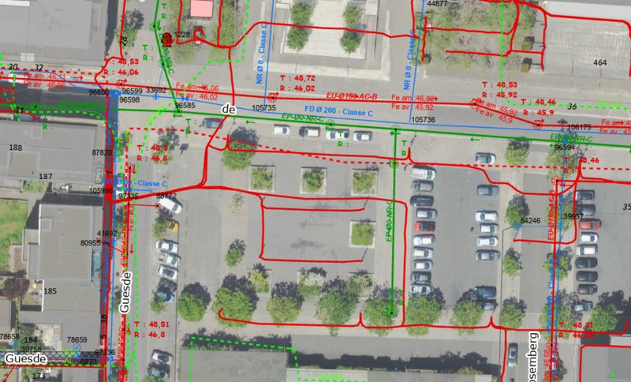

« Saisine ce matin, chronique d’une transparence annoncée »
Ce matin, la Commission d’accès aux documents administratifs (CADA) a été saisie sur un premier dossier. Pas pour des clopinettes, non. Pour le dossier LIDL – Place Maurice Thorez. Et elle le sera de nouveau suite à une mise en demeure faite ce matin sur les recrutements municipaux qui sent bon le refus de s’expliquer.« Les politiciens, on croit toujours qu’ils vont répondre à la question, et puis paf, ils vous sortent un chiffre. » Coluche avait raison. Là, ils nous ont sorti « 61 CV ». Beau chiffre, pour un bilan sur le Facebook de la ville, en effet. Mais personne n’a jamais fait une politique publique avec un tas de CV.
Il aurait même certainement ajouté : « Célébrer 61 candidatures comme une victoire, c’est comme se vanter d’avoir 61 tickets de caisse dans la poche. Ça prouve juste que t’es allé faire les courses, pas que tu as un frigo plein. »
Et nous renchérissons : « Ils nous expliquent qu’ils ont reçu 61 CV pour nous dire qu’ils ont du choix, mais quand on leur demande leurs critères de sélection, là, soudain, ils ne trouvent plus leurs papiers. Comme par hasard (sic!) »

Le droit de savoir : un truc qu’on rappelle en démocratie….. surtout avec le document joint (on en a reçu 3 au total) qui à lui seul mérite de décerner « un grand prix international…. et grand public de la transparence involontaire » à la ville »:
La saisine de la CADA, c’est un droit citoyen. Pas un privilège. Pas une faveur. Un droit.
-
-
Comme le droit de savoir pourquoi on enlève des jardinières place Maurice Thorez sans étude d’impact.
-
Comme le droit de savoir sur quels critères on recrute ceux qui vont encadrer nos gamins.
-
Comme le droit de savoir ce que contient ce fameux bail commercial que la mairie estime « non communicable ».
-
Rappelons-le : pour le dossier Bien Marceau, on a obtenu gain de cause ? Avec une décision de la CADA. La transparence, ça s’obtient pas en restant les bras croisés. Comme le rappelait notre tribune dans Clarté (janvier-février 2026) :« L’intérêt général est un bien précieux. Trop précieux pour ne pas concerner le plus grand nombre »
Les mêmes qui nous parlent de démocratie participative se gardent bien de partager les documents qui permettraient aux citoyens de participer vraiment. C’est une drôle de conception de la participation : on vous invite à la table, mais on vous sert des miettes et on garde la carte des vins dans la poche.
100 jours : un bilan qui va vous plaire
Après l’été, on vous sortira les « Cahiers de VESEMT » sur les 100 premiers jours du nouveau maire. En attendant, un avant-goût pour celles et ceux qui aiment savoir ce qui se passe dans leur ville :
-
Démocratie locale : Des espaces de concertation existent. C’est vrai. Mais le pouvoir de décision, lui, est resté planqué dans les bureaux. Les réunions, ça fait joli sur les photos. Mais les décisions, elles sont prises ailleurs. « Ils découvrent qu’il y a des habitants dans les quartiers seulement trois semaines avant les élections. Après, ils les redécouvrent quand ils veulent leur expliquer que leur avis est important… pour la forme. »
-
Quartiers populaires : Les attentes sont fortes. Les actes, un peu moins. La Rabaterie, le centre, la gare : les besoins sont là. Les moyens, moins. On nous parle de « ville inclusive », mais on ne voit pas trop ce qu’on y gagne, si ce n’est des discours et des réunions sans suite.
-
Sécurité : On préfère la surenchère sécuritaire à la prévention primaire. Nous on dit : « La sécurité, c’est comme les potions magiques : si tu mets que du sucre et de l’eau, ça fait joli mais ça guérit rien. » Mettre des caméras partout, et armer les policiers c’est bien pour certainEs. Mais former etr recruter des éducateurs de rue, des médiateurs, des gens qui connaissent les quartiers, avec des missions claires ça, c’est le boulot de fond qui coûte moins cher et ne fait pas que du bruit.
-
Transition écologique : Annonces par-ci, annonces par-là. Mais les effets concrets sur les inégalités, on en parle quand ?L’écologie punitive, celle qui frappe ceux qui n’ont pas les moyens de changer de voiture ou de refaire leur appartement, ça nous intéresse moins. On veut une écologie qui profite à tous, en accédant sans peur à la Loire, par exemple. Pas une écologie de vitrine et de mini-parc.
-
Vie associative : On va nous parler bientôt d’ « appels à projets ». Mais les associations de terrain, celles qui sont là depuis des années, elles ont besoin de financements pérennes, pas de survivre au fil des dossiers à remplir.
-
Commerce et attractivité : L’actualité porte sur les conséquences de l’ouverture du LIDL c’est nécéssaire ! Mais , en septembre nous commencerons à parler sérieusement du
Et à la rentrée avec notre dossier sur les 100 premier jours de notre (re)nouveau maire avec quelques nouveaux dossiers comme : LIDL est il le sujet du moment pour ne pas parler du reste : Nouvel accès à la gare et entrée Est de la Tours Métropole Val de Loire, développement du Sud Métropolitain et foncier corpopétrussien, – Restructuration du marché et du Centre Ville….
La confiance, ça se mérite et c’est une notion qui semble avoir disparu du vocabulaire municipal depuis la campagne !
Et les 61 CV dans tout ça ?
Si les 61 CV, ce stock, est une fierté pour la mairie, on leur pose une question :
-
-
Combien de ces candidats habitent Saint-Pierre-des-Corps ?
-
Combien connaissent les quartiers ?
-
Combien sont prêts à y rester plus de deux ans ?
-
Combien sont formés à la prévention des violences ?
-
La question mérite d’être posée. Et elle mérite une réponse. Pas un chiffre. Une réponse.
« Un quartier, c’est comme une ville » On le rappelle en permanence. Et si on veut une ville qui fonctionne, il faut que tous les quartiers aient les mêmes droits, les mêmes services, les mêmes perspectives. Pas des miettes. Pas des promesses. Des actes.
La suite : on vous tient au courant
La CADA a deux mois pour répondre après avoir été sollicitée. On ne lâchera rien. Sur le LIDL, sur les recrutements, sur la transparence.
Parce que la transparence, ce n’est pas un concept. C’est une exigence.
Et comme le rappelait Coluche avec cette lucidité qui lui était propre :« La droite vend des promesses que la gauche ne tient pas, alors à la fin, on se retrouve toujours avec les mêmes qui bossent et les mêmes qui encaissent. »
Nous, on veut que les choses changent. Pas dans cent jours. Pas dans cinq ans. Maintenant.
À bon entendeur.
Saint-Pierre-des-Corps, le 6 juillet 2026
Le Comité populaire et néanmoins bienveillant de Vivre (surtout) Ensemble et (si possible) Solidaires en Métropole Tourangelle (VESEMT)
Commentaires